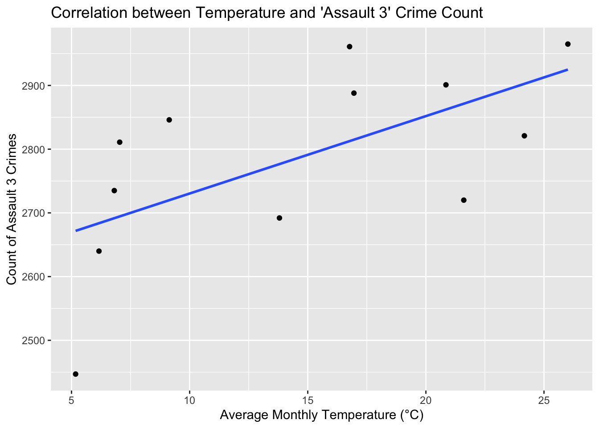
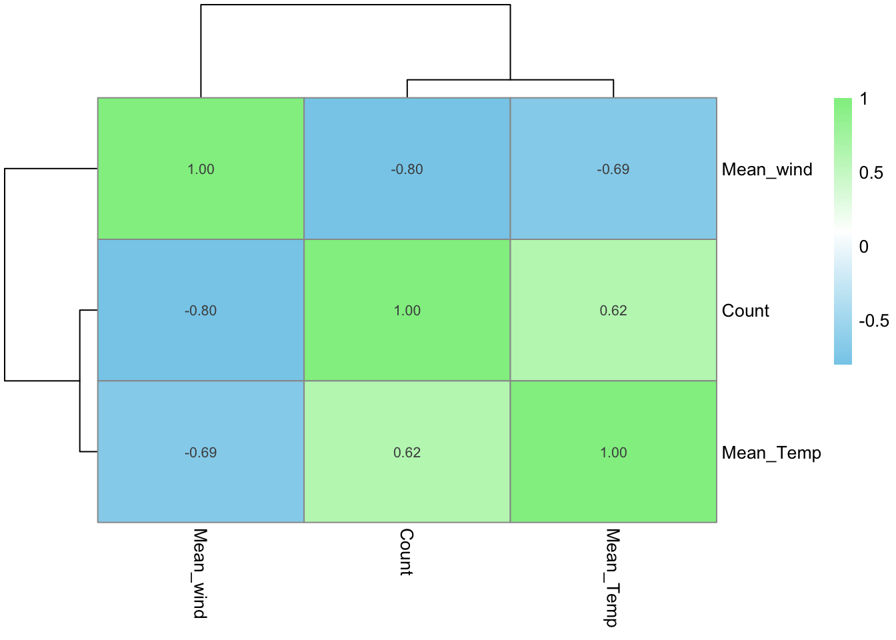
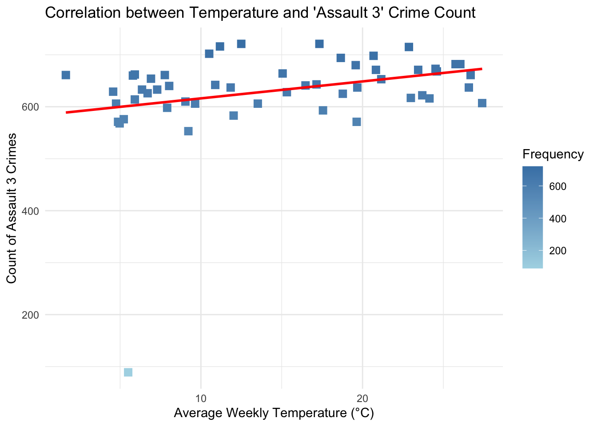
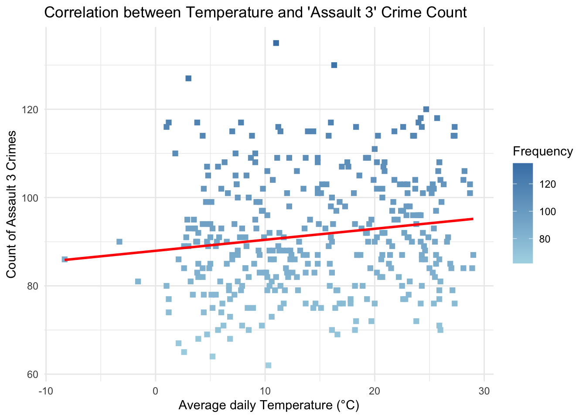

Analysis
Here we provide a detailed analysis using more sophisticated statistics techniques.

This comes from the file analysis.qmd.
We describe here our detailed data analysis. This page will provide an overview of what questions you addressed, illustrations of relevant aspects of the data with tables and figures, and a statistical model that attempts to answer part of the question. You’ll also reflect on next steps and further analysis.
The audience for this page is someone like your class mates, so you can expect that they have some level of statistical and quantitative sophistication and understand ideas like linear and logistic regression, coefficients, confidence intervals, overfitting, etc.
While the exact number of figures and tables will vary and depend on your analysis, you should target around 5 to 6. An overly long analysis could lead to losing points. If you want you can link back to your blog posts or create separate pages with more details.
The style of this paper should aim to be that of an academic paper. I don’t expect this to be of publication quality but you should keep that aim in mind. Avoid using “we” too frequently, for example “We also found that …”. Describe your methodology and your findings but don’t describe your whole process.
Example of loading data
The code below shows an example of loading the loan refusal data set (which you should delete at some point).
Note on Attribution
In general, you should try to provide links to relevant resources, especially those that helped you. You don’t have to link to every StackOverflow post you used but if there are explainers on aspects of the data or specific models that you found helpful, try to link to those. Also, try to link to other sources that might support (or refute) your analysis. These can just be regular hyperlinks. You don’t need a formal citation.
If you are directly quoting from a source, please make that clear. You can show quotes using > like this
> To be or not to be.To be or not to be.
Rubric: On this page
You will
- Introduce what motivates your Data Analysis (DA)
- Which variables and relationships are you most interested in?
- What questions are you interested in answering?
- Provide context for the rest of the page. This will include figures/tables that illustrate aspects of the data of your question.
- Modeling and Inference
- The page will include some kind of formal statistical model. This could be a linear regression, logistic regression, or another modeling framework.
- Explain the ideas and techniques you used to choose the predictors for your model. (Think about including interaction terms and other transformations of your variables.)
- Describe the results of your modelling and make sure to give a sense of the uncertainty in your estimates and conclusions.
- Explain the flaws and limitations of your analysis
- Are there some assumptions that you needed to make that might not hold? Is there other data that would help to answer your questions?
- Clarity Figures
- Are your figures/tables/results easy to read, informative, without problems like overplotting, hard-to-read labels, etc?
- Each figure should provide a key insight. Too many figures or other data summaries can detract from this. (While not a hard limit, around 5 total figures is probably a good target.)
- Default
lmoutput and plots are typically not acceptable.
- Clarity of Explanations
- How well do you explain each figure/result?
- Do you provide interpretations that suggest further analysis or explanations for observed phenomenon?
- Organization and cleanliness.
- Make sure to remove excessive warnings, hide most or all code, organize with sections or multiple pages, use bullets, etc.
- This page should be self-contained, i.e. provide a description of the relevant data.
Introduction
From our data page, we know that the Level 3 Assault is the most common cases in the New York city, so we decide to locate our target on the Demographic factor and Environmental factor that would effect the incidents of Level 3 Assault. Through this analysis, We could uncover correlations that inform targeted interventions, enhance policy-making, and improve resource allocation. By identifying specific risk factors related to demographics and environmental conditions, the analysis aims to guide more effective prevention strategies, optimize urban planning, and strengthen community engagement and support.
Our team will focus on the analysis of following variables in the dataset:
Demographic factor : Age, Race, Borough
Environmental factor: Temperature,weather condition,wind speed
Demographic factor
Age
From this bar chart, we could know that the distribution of Assault 3 incidents across different age groups in New York City. It highlights that the age group 25-44 has the highest incidence count, significantly surpassing other age groups, with the lowest counts observed in the under-18 and 65+ age brackets. Next we are going to move to gender and race’s relationship with Assault 3 crime rate.
Gender and Race

From this graph we could directly find out that males always have higher number of incidents than female. Also, the highest number of incidents is associated with Black males, followed by White Hispanic males.
However, it have some limitations of this graph. The graph’s representation of Assault 3 incidents by race and gender may be skewed by reporting biases and systemic disparities in arrest records, as well as not accounting for the actual demographic distribution of New York City’s population.
Borough

The graph presents a horizontal bar chart of Assault 3 incidents by borough in New York City, showing Bronx with the highest number of incidents followed by the Brooklyn, Queens, Manhattan, and Staten Island with the fewest.
In conclusion, by analyzing factors like region, age, and gender, we can establish a general distribution pattern for Level 3 Assault crimes. Subsequently, we will employ regression models to discern whether these factors are correlated with or causative of variations in crime rates. Now, we are moving to the EDA of environmental factors.
Environmental Factors
Temperature
Reading layer `geo_export_87553334-fdcd-4d0c-8ab2-43a5e2975733' from data source `/Users/dingjiatong/R code/finalproject-jt/dataset/geo_export_87553334-fdcd-4d0c-8ab2-43a5e2975733.shp'
using driver `ESRI Shapefile'
Simple feature collection with 77 features and 3 fields
Geometry type: MULTIPOLYGON
Dimension: XY
Bounding box: xmin: -74.25559 ymin: 40.49612 xmax: -73.70001 ymax: 40.91553
Geodetic CRS: WGS84(DD)
These maps reveal a clear pattern in “Assault 3” incidents: they peak during the summer months, likely due to the increase in outdoor activities and social interactions that warmer weather encourages. Spring and Fall act as transitional periods with moderate crime rates, suggesting a correlation with the gradual changes in weather and daylight hours, which influence how much time people spend outside. The winter months show a marked decrease in crime rates, possibly due to the cold weather discouraging outdoor activity. These trends indicate that environmental factors, such as temperature and seasonality, may play a significant role in the fluctuation of crime rates, necessitating seasonally adjusted strategies for law enforcement and community safety programs.
Weather Condition

The bar chart illustrates the frequency of Assault 3 incidents occurring under various weather conditions. Clear weather and Rain with partially is associated with the highest number of incidents, followed closely by overcast and partially cloudy conditions. Incidents are less frequent during more adverse weather conditions, such as combinations of snow, rain, and overcast skies, suggesting possible correlations between weather and the occurrence of Assault 3 crimes.
Windspeed

This bar chart shows that incidents are most frequent in wind speeds ranging from 10 to 20 km/h and significantly less frequent as wind speeds increase beyond 20 km/h, suggesting fewer Assault 3 incidents occur in higher wind conditions.
Model
daily_crime_count <- ds %>%
group_by(ARREST_DATE) %>%
filter(OFNS_DESC == "ASSAULT 3 & RELATED OFFENSES")%>%
summarize(Daily_Count= n(), .groups = 'drop') %>%
arrange(ARREST_DATE)
ds$ARREST_BORO = as.factor(ds$ARREST_BORO)
ds$ARREST_PRECINCT=as.factor(ds$ARREST_PRECINCT)
ds$AGE_GROUP= as.factor(ds$AGE_GROUP)
ds$PERP_SEX= as.factor(ds$PERP_SEX)
ds$PERP_RACE =as.factor(ds$PERP_RACE)
ds$conditions =as.factor(ds$conditions)library(dplyr)
library(ggplot2)
library(patchwork)
library(lubridate)
# Assuming 'ds' is your dataset and has 'ARREST_DATE', 'PD_DESC', and 'temp' columns
# Prepare the assault data summary
assault_data <- ds %>%
filter(OFNS_DESC == "ASSAULT 3 & RELATED OFFENSES") %>%
mutate(Month = floor_date(as.Date(ARREST_DATE), "month")) %>%
group_by(Month) %>%
summarise(Count = n()) %>%
ungroup()
# Prepare the temperature data summary
mean_temp_by_month <- ds %>%
filter(OFNS_DESC == "ASSAULT 3 & RELATED OFFENSES") %>%
mutate(Month = floor_date(as.Date(ARREST_DATE), "month")) %>%
group_by(Month) %>%
summarise(Mean_Temp = mean(temp, na.rm = TRUE)) %>%
ungroup()
mean_wind_by_month <- ds %>%
filter(OFNS_DESC == "ASSAULT 3 & RELATED OFFENSES") %>%
mutate(Month = floor_date(as.Date(ARREST_DATE), "month")) %>%
group_by(Month) %>%
summarise(Mean_wind = mean(windspeed, na.rm = TRUE)) %>%
ungroup()
# Join the datasets
correlation_data <- left_join(assault_data, mean_temp_by_month,mean_wind_by_month, by = "Month")%>%
left_join(mean_wind_by_month, by = "Month")
# Calculate the correlation coefficient between Count and Mean_Temp
correlation_coefficient <- cor(correlation_data$Count, correlation_data$Mean_Temp,use = "complete.obs")
# Output the correlation coefficient
print(correlation_coefficient)[1] 0.616935# If you want to plot this correlation, you can use a scatter plot with a smooth line
correlation_plot <- ggplot(correlation_data, aes(x = Mean_Temp, y = Count)) +
geom_point() +
geom_smooth(method = "lm", se = FALSE) +
labs(x = "Average Monthly Temperature (°C)", y = "Count of Assault 3 Crimes",
title = "Correlation between Temperature and 'Assault 3' Crime Count")
# Print the correlation plot
print(correlation_plot)`geom_smooth()` using formula = 'y ~ x'
cor_matrix1 <- cor(correlation_data[, c("Count", "Mean_Temp","Mean_wind")], use = "complete.obs")
pheatmap(cor_matrix1,
color = colorRampPalette(c("skyblue", "white", "lightgreen"))(200),
display_numbers = T,
clustering_distance_rows = "euclidean",
clustering_distance_cols = "euclidean",
clustering_method = "complete")
assault_data_weekly <- ds %>%
filter(OFNS_DESC == "ASSAULT 3 & RELATED OFFENSES") %>%
mutate(Week = floor_date(as.Date(ARREST_DATE), "week")) %>%
group_by(Week) %>%
summarise(Count = n()) %>%
ungroup()
mean_temp_by_week <- ds %>%
filter(OFNS_DESC == "ASSAULT 3 & RELATED OFFENSES") %>%
mutate(Week = floor_date(as.Date(ARREST_DATE), "week")) %>%
group_by(Week) %>%
summarise(Mean_Temp = mean(temp, na.rm = TRUE)) %>%
ungroup()
mean_wind_by_week <- ds %>%
filter(OFNS_DESC == "ASSAULT 3 & RELATED OFFENSES") %>%
mutate(Week = floor_date(as.Date(ARREST_DATE), "week")) %>%
group_by(Week) %>%
summarise(Mean_Wind = mean(windspeed, na.rm = TRUE)) %>%
ungroup()
correlation_data_weekly <- left_join(assault_data_weekly, mean_temp_by_week, by = "Week") %>%
left_join(mean_wind_by_week, by = "Week")
correlation_plot2 <- ggplot(correlation_data_weekly, aes(x = Mean_Temp, y = Count, color = Count)) +
geom_point(shape = 15, size = 3) + # Square points
scale_color_gradient(low = "lightblue", high = "steelblue") + # Color gradient
geom_smooth(method = "lm", se = FALSE, color = "red") + # Linear regression line
labs(x = "Average Weekly Temperature (°C)", y = "Count of Assault 3 Crimes",
title = "Correlation between Temperature and 'Assault 3' Crime Count") +
theme_minimal() +
guides(color = guide_colorbar(title = "Frequency", title.position = "top"))
# Print the plot
print(correlation_plot2)`geom_smooth()` using formula = 'y ~ x'
cor_matrix2 <- cor(correlation_data_weekly[, c("Count", "Mean_Temp","Mean_Wind")], use = "complete.obs")
pheatmap(cor_matrix2,
color = colorRampPalette(c("skyblue", "white", "lightgreen"))(200),
display_numbers = T,
clustering_distance_rows = "euclidean",
clustering_distance_cols = "euclidean",
clustering_method = "complete")
daily_crime_count <- ds %>%
group_by(ARREST_DATE) %>%
filter(OFNS_DESC == "ASSAULT 3 & RELATED OFFENSES")%>%
summarize(Daily_Count= n(), .groups = 'drop') %>%
arrange(ARREST_DATE)
daily_temperature <- ds %>%
group_by(ARREST_DATE) %>%
summarise(Temp = mean(temp, na.rm = TRUE)) %>%
ungroup()
wind <-ds %>%
group_by(ARREST_DATE) %>%
summarise(Wind = mean(windspeed, na.rm = TRUE)) %>%
ungroup()
daily_data <- daily_crime_count %>%
left_join(daily_temperature, by = "ARREST_DATE") %>%
left_join(wind, by = "ARREST_DATE")
scatter_plot3 <- ggplot(daily_data, aes(x = Temp, y = Daily_Count, color = Daily_Count)) +
geom_point(shape = 15, size = 2) + # Square points
scale_color_gradient(low = "lightblue", high = "steelblue") + # Color gradient
geom_smooth(method = "lm", se = FALSE, color = "red") + # Linear regression line
labs(x = "Average daily Temperature (°C)", y = "Count of Assault 3 Crimes",
title = "Correlation between Temperature and 'Assault 3' Crime Count") +
theme_minimal() +
guides(color = guide_colorbar(title = "Frequency", title.position = "top"))
print(scatter_plot3)`geom_smooth()` using formula = 'y ~ x'
cor_matrix3 <- cor(daily_data[, c("Daily_Count", "Temp","Wind")], use = "complete.obs")
pheatmap(cor_matrix3,
color = colorRampPalette(c("skyblue", "white", "lightgreen"))(200),
display_numbers = T,
clustering_distance_rows = "euclidean",
clustering_distance_cols = "euclidean",
clustering_method = "complete")
modweek <- glm(correlation_data_weekly$Count~correlation_data_weekly$Mean_Temp+correlation_data_weekly$Mean_Wind)
summary(modweek)
Call:
glm(formula = correlation_data_weekly$Count ~ correlation_data_weekly$Mean_Temp +
correlation_data_weekly$Mean_Wind)
Coefficients:
Estimate Std. Error t value Pr(>|t|)
(Intercept) 542.168 96.452 5.621 8.44e-07 ***
correlation_data_weekly$Mean_Temp 3.611 1.720 2.100 0.0408 *
correlation_data_weekly$Mean_Wind 1.825 4.114 0.443 0.6593
---
Signif. codes: 0 '***' 0.001 '**' 0.01 '*' 0.05 '.' 0.1 ' ' 1
(Dispersion parameter for gaussian family taken to be 7081.872)
Null deviance: 387713 on 52 degrees of freedom
Residual deviance: 354094 on 50 degrees of freedom
AIC: 625.18
Number of Fisher Scoring iterations: 2modmonth <-glm(correlation_data$Count~ correlation_data$Mean_Temp + correlation_data$Mean_wind)
summary(modmonth)
Call:
glm(formula = correlation_data$Count ~ correlation_data$Mean_Temp +
correlation_data$Mean_wind)
Coefficients:
Estimate Std. Error t value Pr(>|t|)
(Intercept) 4138.621 590.896 7.004 6.3e-05 ***
correlation_data$Mean_Temp 2.432 5.399 0.451 0.6630
correlation_data$Mean_wind -69.753 26.789 -2.604 0.0286 *
---
Signif. codes: 0 '***' 0.001 '**' 0.01 '*' 0.05 '.' 0.1 ' ' 1
(Dispersion parameter for gaussian family taken to be 9568.613)
Null deviance: 243773 on 11 degrees of freedom
Residual deviance: 86118 on 9 degrees of freedom
AIC: 148.6
Number of Fisher Scoring iterations: 2modday <- lm(daily_data$Daily_Count ~ daily_data$Temp +daily_data$Wind)
summary(modday)
Call:
lm(formula = daily_data$Daily_Count ~ daily_data$Temp + daily_data$Wind)
Residuals:
Min 1Q Median 3Q Max
-28.370 -9.303 -1.497 8.869 44.098
Coefficients:
Estimate Std. Error t value Pr(>|t|)
(Intercept) 89.09075 3.03922 29.314 < 2e-16 ***
daily_data$Temp 0.23861 0.08909 2.678 0.00774 **
daily_data$Wind -0.04993 0.11675 -0.428 0.66915
---
Signif. codes: 0 '***' 0.001 '**' 0.01 '*' 0.05 '.' 0.1 ' ' 1
Residual standard error: 12.87 on 362 degrees of freedom
Multiple R-squared: 0.02341, Adjusted R-squared: 0.01802
F-statistic: 4.34 on 2 and 362 DF, p-value: 0.01373ds %>%
group_by(OFNS_DESC, LAW_CAT_CD, AGE_GROUP, PERP_SEX, PERP_RACE,ARREST_BORO,ARREST_PRECINCT,conditions) %>%
filter((OFNS_DESC == "ASSAULT 3 & RELATED OFFENSES"))%>%
count(name = 'y') -> df_y
mod <- glm(y ~ conditions+ AGE_GROUP + PERP_SEX + PERP_RACE+ ARREST_BORO+ ARREST_PRECINCT,
data = df_y, family = poisson)
summary(mod)
Call:
glm(formula = y ~ conditions + AGE_GROUP + PERP_SEX + PERP_RACE +
ARREST_BORO + ARREST_PRECINCT, family = poisson, data = df_y)
Coefficients: (3 not defined because of singularities)
Estimate Std. Error z value Pr(>|z|)
(Intercept) -1.65493 0.09951 -16.631 < 2e-16 ***
conditionsOvercast -1.78485 0.04457 -40.049 < 2e-16 ***
conditionsPartially cloudy -0.10627 0.01516 -7.008 2.42e-12 ***
conditionsRain -1.10053 0.02463 -44.681 < 2e-16 ***
conditionsRain, Overcast -0.76048 0.02022 -37.614 < 2e-16 ***
conditionsRain, Partially cloudy 0.03254 0.01459 2.230 0.025738 *
conditionsSnow, Partially cloudy -2.29470 0.10609 -21.629 < 2e-16 ***
conditionsSnow, Rain, Overcast -2.21498 0.10860 -20.396 < 2e-16 ***
conditionsSnow, Rain, Partially cloudy -1.93889 0.05382 -36.025 < 2e-16 ***
AGE_GROUP18-24 0.83808 0.03302 25.384 < 2e-16 ***
AGE_GROUP25-44 1.81259 0.03111 58.269 < 2e-16 ***
AGE_GROUP45-64 0.96066 0.03260 29.465 < 2e-16 ***
AGE_GROUP65+ -0.16521 0.04688 -3.524 0.000425 ***
PERP_SEXM 0.73722 0.01257 58.660 < 2e-16 ***
PERP_SEXU -1.43457 0.04609 -31.123 < 2e-16 ***
PERP_RACEASIAN / PACIFIC ISLANDER 1.22719 0.08754 14.019 < 2e-16 ***
PERP_RACEBLACK 2.41670 0.08548 28.273 < 2e-16 ***
PERP_RACEBLACK HISPANIC 1.24769 0.08686 14.364 < 2e-16 ***
PERP_RACEWHITE 1.28721 0.08705 14.787 < 2e-16 ***
PERP_RACEWHITE HISPANIC 1.99411 0.08570 23.270 < 2e-16 ***
ARREST_BOROK -1.14847 0.08945 -12.839 < 2e-16 ***
ARREST_BOROM -0.87635 0.07688 -11.398 < 2e-16 ***
ARREST_BOROQ 1.38875 0.41743 3.327 0.000878 ***
ARREST_BOROS -0.79379 0.08730 -9.093 < 2e-16 ***
ARREST_PRECINCT5 0.02022 0.09205 0.220 0.826094
ARREST_PRECINCT6 0.04568 0.09241 0.494 0.621049
ARREST_PRECINCT7 0.17566 0.08858 1.983 0.047359 *
ARREST_PRECINCT9 0.15933 0.08940 1.782 0.074722 .
ARREST_PRECINCT10 -0.02530 0.09348 -0.271 0.786621
ARREST_PRECINCT13 0.31788 0.08553 3.717 0.000202 ***
ARREST_PRECINCT14 0.87492 0.07627 11.471 < 2e-16 ***
ARREST_PRECINCT17 -0.28175 0.10546 -2.672 0.007548 **
ARREST_PRECINCT18 0.44011 0.08250 5.335 9.56e-08 ***
ARREST_PRECINCT19 0.07032 0.09308 0.755 0.449980
ARREST_PRECINCT20 -0.38285 0.10821 -3.538 0.000403 ***
ARREST_PRECINCT22 -1.09142 0.20707 -5.271 1.36e-07 ***
ARREST_PRECINCT23 0.47131 0.08198 5.749 8.95e-09 ***
ARREST_PRECINCT24 -0.08732 0.09663 -0.904 0.366196
ARREST_PRECINCT25 0.39193 0.08364 4.686 2.78e-06 ***
ARREST_PRECINCT26 0.03176 0.09591 0.331 0.740554
ARREST_PRECINCT28 0.20064 0.08844 2.269 0.023293 *
ARREST_PRECINCT30 0.17438 0.08820 1.977 0.048024 *
ARREST_PRECINCT32 0.73514 0.07990 9.201 < 2e-16 ***
ARREST_PRECINCT33 0.31908 0.08631 3.697 0.000218 ***
ARREST_PRECINCT34 0.39698 0.08440 4.703 2.56e-06 ***
ARREST_PRECINCT40 0.39545 0.04988 7.928 2.23e-15 ***
ARREST_PRECINCT41 -0.14451 0.05774 -2.503 0.012319 *
ARREST_PRECINCT42 0.20755 0.05177 4.009 6.09e-05 ***
ARREST_PRECINCT43 0.22539 0.05082 4.435 9.22e-06 ***
ARREST_PRECINCT44 0.35116 0.05003 7.019 2.23e-12 ***
ARREST_PRECINCT45 -0.36216 0.06084 -5.953 2.63e-09 ***
ARREST_PRECINCT46 0.38984 0.04944 7.885 3.14e-15 ***
ARREST_PRECINCT47 0.29678 0.05050 5.877 4.17e-09 ***
ARREST_PRECINCT48 0.19595 0.05275 3.715 0.000203 ***
ARREST_PRECINCT49 -0.29020 0.05939 -4.886 1.03e-06 ***
ARREST_PRECINCT50 -0.80065 0.07304 -10.962 < 2e-16 ***
ARREST_PRECINCT52 NA NA NA NA
ARREST_PRECINCT60 0.73734 0.09366 7.873 3.47e-15 ***
ARREST_PRECINCT61 0.36033 0.10216 3.527 0.000420 ***
ARREST_PRECINCT62 0.91595 0.09257 9.895 < 2e-16 ***
ARREST_PRECINCT63 0.37582 0.10109 3.718 0.000201 ***
ARREST_PRECINCT66 0.53899 0.10117 5.328 9.95e-08 ***
ARREST_PRECINCT67 1.31269 0.08890 14.766 < 2e-16 ***
ARREST_PRECINCT68 0.67343 0.09964 6.758 1.40e-11 ***
ARREST_PRECINCT69 0.70433 0.09880 7.129 1.01e-12 ***
ARREST_PRECINCT70 0.81328 0.09320 8.726 < 2e-16 ***
ARREST_PRECINCT71 0.80808 0.09516 8.491 < 2e-16 ***
ARREST_PRECINCT72 0.82505 0.09384 8.792 < 2e-16 ***
ARREST_PRECINCT73 1.24677 0.08935 13.953 < 2e-16 ***
ARREST_PRECINCT75 1.48802 0.08704 17.096 < 2e-16 ***
ARREST_PRECINCT76 -0.19118 0.12485 -1.531 0.125706
ARREST_PRECINCT77 0.87359 0.09363 9.331 < 2e-16 ***
ARREST_PRECINCT78 0.21993 0.10857 2.026 0.042798 *
ARREST_PRECINCT79 0.90390 0.09260 9.762 < 2e-16 ***
ARREST_PRECINCT81 0.55679 0.09895 5.627 1.83e-08 ***
ARREST_PRECINCT83 0.89312 0.09281 9.624 < 2e-16 ***
ARREST_PRECINCT84 0.46124 0.10199 4.522 6.12e-06 ***
ARREST_PRECINCT88 0.21501 0.10689 2.012 0.044269 *
ARREST_PRECINCT90 0.54995 0.09809 5.606 2.07e-08 ***
ARREST_PRECINCT94 NA NA NA NA
ARREST_PRECINCT100 -2.39426 0.42201 -5.673 1.40e-08 ***
ARREST_PRECINCT101 -2.00746 0.42004 -4.779 1.76e-06 ***
ARREST_PRECINCT102 -1.65931 0.41817 -3.968 7.25e-05 ***
ARREST_PRECINCT103 -1.31176 0.41720 -3.144 0.001665 **
ARREST_PRECINCT104 -1.73404 0.41869 -4.142 3.45e-05 ***
ARREST_PRECINCT105 -1.47858 0.41762 -3.540 0.000399 ***
ARREST_PRECINCT106 -1.64218 0.41813 -3.927 8.59e-05 ***
ARREST_PRECINCT107 -1.98661 0.41909 -4.740 2.13e-06 ***
ARREST_PRECINCT108 -1.89938 0.41884 -4.535 5.76e-06 ***
ARREST_PRECINCT109 -1.48049 0.41763 -3.545 0.000393 ***
ARREST_PRECINCT110 -1.17777 0.41712 -2.824 0.004749 **
ARREST_PRECINCT111 -2.45244 0.42360 -5.790 7.06e-09 ***
ARREST_PRECINCT112 -2.38702 0.42187 -5.658 1.53e-08 ***
ARREST_PRECINCT113 -1.26789 0.41723 -3.039 0.002375 **
ARREST_PRECINCT114 -1.52999 0.41368 -3.698 0.000217 ***
ARREST_PRECINCT115 -1.37068 0.41750 -3.283 0.001027 **
ARREST_PRECINCT120 0.56024 0.08896 6.297 3.03e-10 ***
ARREST_PRECINCT121 0.24570 0.09403 2.613 0.008979 **
ARREST_PRECINCT122 0.02011 0.10052 0.200 0.841456
ARREST_PRECINCT123 NA NA NA NA
---
Signif. codes: 0 '***' 0.001 '**' 0.01 '*' 0.05 '.' 0.1 ' ' 1
(Dispersion parameter for poisson family taken to be 1)
Null deviance: 45008 on 8615 degrees of freedom
Residual deviance: 15195 on 8519 degrees of freedom
AIC: 38899
Number of Fisher Scoring iterations: 5